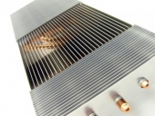
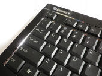
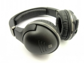
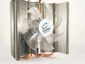
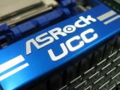
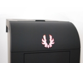
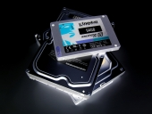
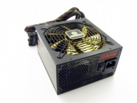
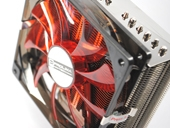

Straipsniai
-
BitFenix Outlaw korpuso apžvalga

Suvirintojas 2011 Gruodžio 9 - Bitfenix yra vienas iš gena neseniai iškilusių ženklų tarp kompiuterių korpusų gamintojų. Pradėjusi nuo aukštesnės klasės gaminių kompanija savo naujausiu produktu nori užkariauti ir taupesnius pirkėjus. Bitfenix Outlaw - vasaros pabaigoje pasirodęs korpusas, gamintojo teigimu "siūlo funkcionalumą, paprastai randamą dvigubai brangesniuose korpusuose" ir "laužo visas taisykles". Kiek daug tiesios šiuose žodžiuose, skaitykite toliau. Iš karto atsiprašau už prastos kokybės nuotraukas. Į "lightbox'ą" sukišti korpuso neišėjo, mano "muilinė" prastai draugauja su blogu apšvietimu. Skaityti toliau...
-
Arctic Accelero Xtreme Plus ir Twin Turbo Pro - aušintuvai Jūsų karštoms vaizdo plokštėms
Suvirintojas 2011 Rugsėjo 17 - Arctic, anksčiau žinoma Arctic Cooling vardu, į galvą ateina dažnai, kai galvojama apie naują aušintuvą greitai vaizdo plokštei. Situacija nėra labai pasikeitusi ir dabar. Arctic savo arsenale turi karščiausioms vieno GPU vaizdo plokštėms skirtus Accelero Xtreme Plus modelius, o šiek tiek mažiau reikliems vartotojams - Twin Turbo Pro modelius. Būtent šiuos du modelius apžvelgti ir gavome iš Arctic. Skaityti toliau...
-
Enermax Aurora Lite KB010U-B klaviatūros apžvalga
ExT 2011 Liepos 11 - Enermax Aurora Lite - tai ergonomiška ir itin stilinga klaviatūra, pasižyminti minimalistiniu dizainu. Klaviatūros viršus yra pagamintas iš vientiso šlifuoto aliuminio lakšto su dailiomis iki blizgesio nušlifuotomis 45° kampu pasvirusiomis briaunomis, "einančiomis" per visą klaviatūros ilgį bei įrėminančiomis atskiras mygtukų grupes. Briaunos labai gerai atspindi aplinkos šviesą, todėl atrodo taip, tarsi jos pačios šviestų. Enermax Aurora Lite klaviatūra yra ypač žemo profilio. Klaviatūros aukštis aukščiausiai nuo stalo pakilusioje vietoje siekia vos 9,2 mm. Mygtukai taip pat yra žemo profilio su 0° pasvirimo kampu, kas rašymą padaro patogų ir nevarginantį riešų. Klaviatūroje yra naudojamas patentuotas žirklinis (angl. scissor) mygtukų mechanizmas, todėl mygtukai spaudžiasi ypač lengvai ir tyliai, o deklaruojamas mygtukų ilgaamžiškumas yra iki 10 milijonų paspaudimų. Skaityti toliau...
-
Steelseries 7H ausinių apžvalga
Suvirintojas 2011 Liepos 6 - SteelSeries pakankamai greitai įsitvirtino tarp "žaidimų įrangą" pardavinėjančių kompanijų. Daugiausia su pelėmis, jų kilimėliais, klaviatūromis bei ausinėmis. Būtent ausinės šiandien ir apžvelgiamos. Kalbant tiksliai, tai - 7H modelis, vienas brangiausių "gaming" ausinių serijos modelių, mūsuose kainuojantis 300 litų. Brangesnės, beveik 400 litų kainuojančios 7H USB prie kompiuterio jungiamos per nedidelę išorinę USB garso plokštę, turinčią atskirą DSP su ekvalaizeriu ir virtualiu 7.1 kanalų garsu. Tačiau tuo pasirūpinti gali ir praktiškai visos atskiros garso plokštės, taigi pigesnio modelio pirkėjai daug nepraranda. 300 litų kaina nėra tokia maža, todėl bandysime išsiaiškinti, ar tokią sumą už šias ausines mokėti verta. Skaityti toliau...
-
CoolJag Falcon IV aušintuvo apžvalga
iller 2011 Birželio 7 - CoolJag kompanija buvo įkurta 2001 metais. Pagrindinė kompanijos veikla - PC skirtų aušintuvų gamyba. Pradėjusi nuo paprastų, iš vientiso aliuminio gabalo išpjaunamų radiatorių gamybos CoolJag išaugo iki heatpipe technologijas diegiančios, platų aušintuvų spektrą siūlančios kompanijos. Šiuo metu CoolJag gamina ne tik staliniams kompiuteriams skirtus aušintuvus, tačiau ir serveriams skirtus aušintuvus, ventiliatorius bei PC aksesuarus. Europoje CoolJag produkcija nėra populiari, o Lietuvoje jos išvis nerasime, todėl nutariau susisiekti su CoolJag atstovais ir daugiau sužinoti apie jų produkciją. Šiandieną jums pristatau CoolJag Falcon IV aušintuvą. Skaityti toliau...
-
ASRock 870 Extreme3 - funkcionalumas už nedidelę kainą?
Suvirintojas 2011 Gegužės 27 - Prieš maždaug penketą metų ASRock tikrai nebūtų buvęs nei mano nei tikriausiai daugelio kitų pasirinkimas komplektuojant vidurinės ar aukštos klasės kompiuterį, mat nei geromis spartinimo savybėmis, nei aukšta komponentų kokybe šios plokštės dažnai nepasižymėjo. ASRock buvo ASUS įkurta dukterinė įmonė, gaminanti pigius produktus nereikliems vartotojams, o nuo 2002-ųjų metų kompanija atsiskyrė, tačiau išlaikė panašią veiklos kryptį. Visgi 2007-ųjų pabaigoje ASrock pranešė keisianti savo kryptį ir gaminsianti ir brangesnes, vidurinei bei aukštesnei klasėms skirtas pagrindines plokštes. Ir šį savo pažadą ASRock tesėjo. Dabar turime ne tik Extreme serijos plokštes, kurios iš pirmo žvilgsnio pasižymi ir funkcijų gausa, ir gera kaina, bet netgi atgaivintą Fatal1ty seriją, o ASRock šių metų pradžioje tapo trečia pagrindinių plokščių gamintoja pagal pardavimus, nusileidžianti tik ASUS ir Gigabyte. Šiandien apžvelgiama ASRock 870 Extreme3 pagrindinė plokštė AMD procesoriams, kuri bent jau "ant popieriaus" atrodo labai patraukliai. Kokia realybė - skaitykite apžvalgoje. Skaityti toliau...
-
BitFenix Survivor korpuso apžvalga
iller 2011 Gegužės 13 - BitFenix kompanijos vardas, ko gero, daugeliui bus naujiena. Tai nenuostabu, kadangi ši kompanija savo veiklą pradėjo 2010 metais ir kol kas yra naujokė kompiuterių komponentų gamintojų tarpe. BitFenix specializuojasi korpusų, ventiliatorių bei modding'o aksesuarų gamyboje. 2010 metų rugpjūtį kompanija anonsavo savo pirmąjį sukurtą korpusą - Colossus. Rugsėjo mėnėsio pabaigoje pirkėjams buvo pristatytas antrasis BitFenix kompanijos sukurtas korpusas - Survivor. Šis korpusas sukurtas Lan Party renginių gerbėjams, išsiskiria savo dizainu bei komplektacija. Skaityti toliau...
-
SSD ir HDD testai: modeliai iš Corsair, Intel, Kingston, Samsung, Seagate ir WD
Suvirintojas 2011 Gegužės 12 - Šios apžvalgos idėja pradžioje kiek skyrėsi nuo dabartinio jos pavadinimo. Prieš kelis mėnesius pagalvojęs, jog turiu nemažai pakankamai naujų kietųjų diskų, sumaniau padaryti išsamų jų spartos palyginimą. Tiesa, toks testavimas nėra trumpas, o testuoti laiko turiu tik savaitgaliais. O dar į rankas pakliuvo Sandy Bridge, Modu87+, dar pora dalykėlių ir reikalai užsitęsė dar ilgiau. Tiesa, kartu su Sandy Bridge galėjau "pačiupinėti" ir Intel X-25M G2 80 GB SSD kaupiklį, ALSO Lietuva sutiko paskolinti Corsair Force F60 60 GB SSD, o draugas - Kingston SSDNow V100 64 GB. Tada dar nusprendžiau tarp testų pateikti ir dviejų HDD RAID 0 rezultatus. Taip kietųjų diskų palyginimas jau virto pakankamai didelės apimties darbu, ir ne tik su kietaisiais diskais. Visiškai suprantu, jog faktiškai apžvelgiu jau praeitos kartos SSD kaupiklius, kuriems pamainos jau yra pristatytos arba bus pristatytos tuojau pat, tačiau šie testai taps gera atskaita ateities kaupiklių testams modding.lt tinklapyje. Taip pat kartu bus pateikta ir šiek tiek bendros informacijos apie SSD. Skaityti toliau...
-
Enermax Modu 87+ 700 W - auksinis ar ne?
Suvirintojas 2011 Balandžio 9 - Enermax - puikiai žinomas gamintojas kompiuterių maitinimo šaltinių srityje, gerą vardą užsitarnavęs kokybiškais maitinimo blokais ir neįprastais ventiliatoriais. Dabar ši Taivano kompanija, gyvuojanti jau dvidešimtmetį, turi nemažą įvairaus galingumo ATX maitinimo šaltinių pasirinkimą. Šiandienos apžvalgai Enermax pateikė vieną efektyviausių savo maitinimo blokų - Modu87+ 700 W modelį. Jis turi 80Plus Gold sertifikatą ir, bent jau pagal gamintojo specifikacijas, aukščiausią naudingumo koeficientą iš visų mano iki šiol bandytų maitinimo blokų. Ko jis vertas - aiškinsimės apžvalgoje. Skaityti toliau...
-
Prolimatech Armageddon aušintuvo ir Red Vortex 14 LED ventiliatoriaus apžvalga
iller 2011 Kovo 16 - Kompanija Prolimatech buvo įkurta 2008 metais, jos pagrindinis padalinys įkurtas Taivanyje. Prolimatech pagrindinė veikla - CPU bei GPU aušinimui skirtų komponentų, ventiliatorių ir termopastų gamyba. Kompanijos sukurtas Megahalems procesoriaus aušintuvas buvo labai palankiai vertinamas PC entuziastų bei spartintojų gretose, šį modelį vėliau pakeitė Megahalems Rev.B aušintuvas. Šie efektyvumu pasižymintys aušintuvai turi nemažus gabaritus, todėl kompanija pirkėjams pateikė Armageddon aušintuvą, kuris yra mažesnių gabaritų, tačiau jame taipogi panaudoti 6 heatpipe šiluminiai vamzdeliai, o aušinimui naudojamas 140 mm ventiliatorius. Kita kompanijos siūloma naujovė - Red Vortex 14 LED ventiliatorius, kuris puikiai tinka derinyje su Armageddon aušintuvu. Bendradarbiaudami su viena didžiausių Vokietijoje PC komponentų parduotuve Caseking.de šiandieną jums pateikiame Prolimatech Armageddon aušintuvo ir Red Vortex 14 LED ventiliatoriaus apžvalgą. Skaityti toliau...